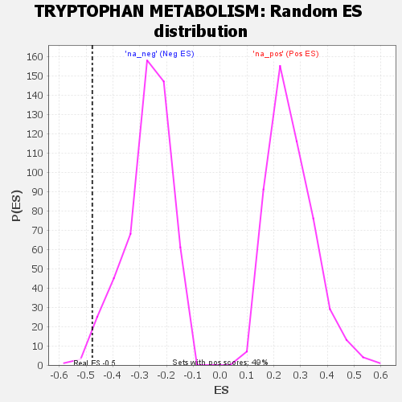

| | | Dataset | GSEA RNK clr Maaslin2 MucosalvsLuminal KO - Ileum.rnk |
| Phenotype | NoPhenotypeAvailable |
| Upregulated in class | na_neg |
| GeneSet | TRYPTOPHAN METABOLISM |
| Enrichment Score (ES) | -0.47663656 |
| Normalized Enrichment Score (NES) | -1.7559578 |
| Nominal p-value | 0.017716536 |
| FDR q-value | 0.081108876 |
| FWER p-Value | 0.638 |
Table: GSEA Results Summary
 Fig 1: Enrichment plot: TRYPTOPHAN METABOLISM
Fig 1: Enrichment plot: TRYPTOPHAN METABOLISM
Profile of the Running ES Score & Positions of GeneSet Members on the Rank Ordered List

Fig 2: TRYPTOPHAN METABOLISM: Random ES distribution
Gene set null distribution of ES for TRYPTOPHAN METABOLISM